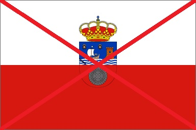

<table border="1" width="100%">
	<tr  colspan="2"><h1><center><font color="green"> Cantabria </font color="green"></center></h1></tr>
	<tr colspan="2"><h2><center>Es un sitio bonito con buena gente<center></h2></tr>
	<tr>
		<td valign="top"><h3>Sitios que visitar:</h3></td>
		<td><h4> 
		<br>Santander</br> 
		<br>Suances</br>
		<br>Las cuevas de Altamira</br>
		<br>Comillas</br>
		<br>Cabarceno</br>
		<br>Torrelavega</br>
		<br>Picos de europa</br>
		</h4></td>
	<tr>
		<td><h3>Y esta es nuestra bandera no la blanca y roja:</h3></td>
		<td></td>
	</tr>
</table>